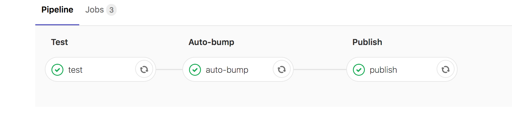
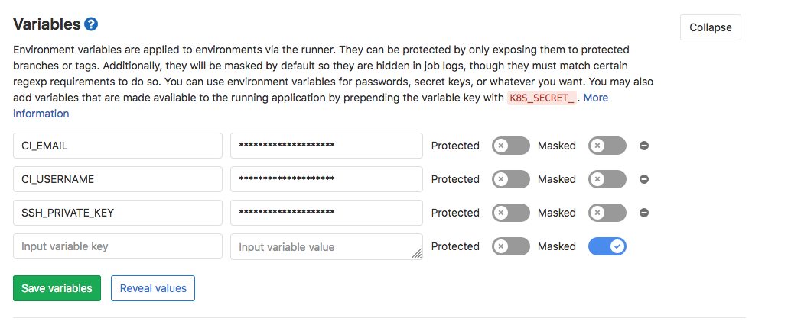
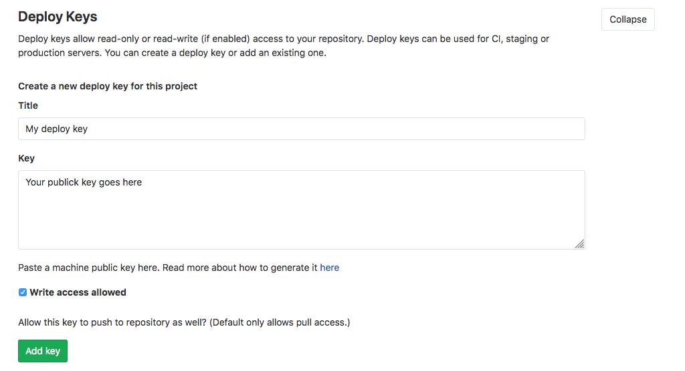
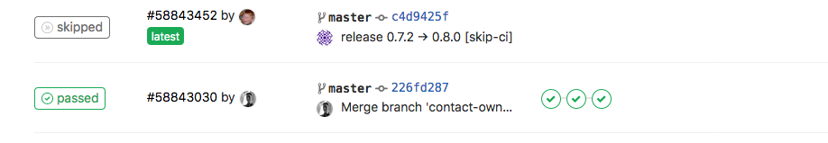

Continuous Integration with Gitlab
In this post, I want to talk about how we can automate our integration process using the Gitlab army tool.
More specifically, how we can create a new release of our software, update the corresponding files that reflects the version, and create a new docker image.
For this example, we have a python/django application and Docker as containerization tool.
Goals:
- Bump a new version every time that a change occurs on
masterbranch. The bump should be executed automatically by theCIprocess. - Create a new
dockerimage that contains the latest changes and push it to the registry.
Defining a CI Pipeline
Starting a CI process in gitlab is super easy, you just need a .gitlab-ci.yaml file that contains stages and jobs configurations. You can find more info here.
For our case purpose, we define three stages with one job each one.
- Test the application.
- Auto bump the version. Means changing the file/s that reflects the version, creating a new commit and git tag.
- Create a new
dockerimage and publish it in Gitlab registry.

Assumptions and Development Workflow:
Define a clear development workflow is crucial for our goal. It gives a clear vision and a tidy way about how developers should work. We have defined the following the flow and probably you are familiar with it:
- A developer creates a new commit on any branch (except
master) - A developer creates a merge request (MR) against
master - When the
MRis accepted and merged, the 3 stages of the CI are executed
Some Assumptions:
- Master branch is protected, means that nobody can push to it, except Gitlab runners.
- The test job runs on every branch when a change is detected.
- We use semantic version.
- For every commit message, we use a convention.
- You can use any tool that you want, in our case we use commitizen
- For simplification, we store the version in a file called
VERSION. You can use any file that you want ascommitizensupports it. - The commit message executed automatically by the
CImust include[skip-ci]otherwise the process will be executed in a loop. You can define the message structure in commitizen as well.
Gitlab Configuration:
In order to be able to change files and push new changes with Gitlab runners, we need to have a ssh key and configure a git user.
First, let's create a ssh key. The only requirement is to create it without a passphrase.
ssh-keygen -f deploy_key -N ""
The previous command will create a private and public key under the files deploy_key and deploy_key.pub. We will use them later.
For the git user, we need an email and username. You can choose whatever you want, in this example, we choose ci-runner@myproject.com and admin respectively.
Now, we need to create three environment variables that will be visible for the runners. They should be created in the variables section under settings/ci_cd:

Create SSH_PRIVATE_KEY, CI_EMAIL, CI_USERNAME variables and fill them with the private_key, email and username that we have created.
An important thing is to unprotect the private key, otherwise, the CI will raise errors.
The latest step is to create a deploy key. To do this, we should create a new one in the section settings/repository and fill it with the public key generated before. Check Write access allowed, otherwise, the runner won't be able to write changes to the repository.

If you have more projects under the same organization, you can reuse the deploy key created before, but you will have to repeat the step where we created the environment variables (ssh key, email, and username).
Start CI pipeline:
Let's start with a basic configuration for our pipeline:
image: docker:latest services: - docker:dind variables: API_IMAGE_NAME: $CI_REGISTRY_IMAGE:$CI_COMMIT_REF_NAME before_script: - apk add --no-cache py-pip - pip install docker-compose stages: - test # - auto-bump # both stages will use later # - publish test: stage: test script: - docker-compose run -e DJANGO_ENVIRONMENT=dev your_project python manage.py test
So, every time that a developer push to any branch the test job will be executed.
Time for the bumping. Below, we are defining a new job to auto bump a new version. The important steps are setting the ssh key, configure git, execute the auto bump command, push to master branch and upload the new version to gitlab artifacts. See the comments next to each line:
auto-bump: stage: auto-bump image: python:3.6 before_script: - 'which ssh-agent || ( apt-get update -qy && apt-get install openssh-client -qqy )' - eval `ssh-agent -s` - echo "${SSH_PRIVATE_KEY}" | tr -d '\r' | ssh-add - > /dev/null # add ssh key - pip3 install -U Commitizen # install commitizen - mkdir -p ~/.ssh - chmod 700 ~/.ssh - echo "$SSH_PUBLIC_KEY" >> ~/.ssh/id_rsa.pub - '[[ -f /.dockerenv ]] && echo -e "Host *\n\tStrictHostKeyChecking no\n\n" > ~/.ssh/config' dependencies: - test script: - git remote set-url origin git@gitlab.com:discover/rentee-core.git # git configuration - git config --global user.email "${CI_EMAIL}" && git config --global user.name "${CI_USERNAME}" - 'exists=`git show-ref refs/heads/master` && if [ -n "$exists" ]; then git branch -D master; fi' - git checkout -b master - cz bump # execute auto bump and push to master - git push origin master:$CI_COMMIT_REF_NAME - TAG=$(head -n 1 VERSION) # get the new software version and save into artifacts - echo "#!/bin/sh" >> variables - echo "export TAG='$TAG'" >> variables - git push origin $TAG only: refs: - master artifacts: paths: - variables
Now, let's add the publish job to create a new docker image and push it to the registry:
publish: stage: publish dependencies: - test - auto-bump script: - source variables # loading environment variables from artifact - echo $TAG - API_IMAGE_TAG="${CI_REGISTRY_IMAGE}:${TAG}" - docker login registry.gitlab.com -u ${CI_REGISTRY_USER} -p ${CI_REGISTRY_PASSWORD} # Authenticating against registry registry - docker build -t $API_IMAGE_NAME your_project # creating docker image - docker tag $API_IMAGE_NAME $API_IMAGE_TAG - docker push $API_IMAGE_TAG # pushing to docker registry only: refs: - master
Because we can not pass variables between jobs, we are using artifacts. You can avoid using artifacts configuring git again in the latest job, then pull the latest changes that include the last commit that bumps the version or simply combining auto-bumping and publish into one job.
After merging with master we have the final result:
